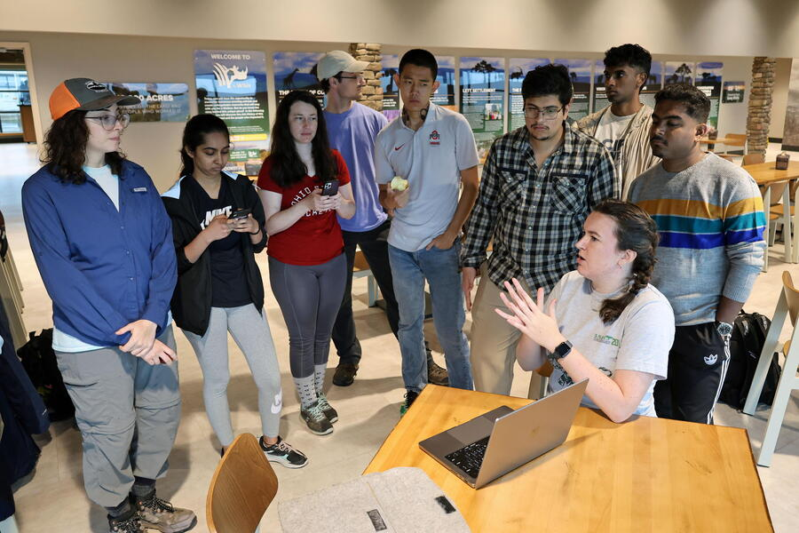

Chain Reaction: A new spotlight series where one rising researcher lights the path to the next. Follow the chain, meet the minds shaping the future of Imageomics.
Jenna Kline, a PhD candidate in computer science and engineering at The Ohio State University, is using drones and artificial intelligence to make wildlife research more efficient and precise. Her work focuses on designing autonomous systems that adapt in real time to the environment, capturing high-quality images and data for ecological studies.
“By combining technology like cameras, drones, and AI, my work allows these systems to make decisions autonomously, streamlining data collection and analysis,” Kline said. “This approach helps ecologists gather data that is better suited for Imageomics pipelines, ultimately improving how we understand and protect nature.”
Kline’s fieldwork spans diverse landscapes, from The Wilds in Ohio to the Mpala Research Centre and Ol Pejeta Conservancy in Kenya, as well as collaborations with the WildDrone team in Europe. Her open-source drone platform, WildWing, provides a cost-effective way for scientists to track and monitor animals with greater accuracy, reducing the need for labor-intensive manual piloting.
Her interest in the natural world began in Akron, Ohio, where family hikes through Cuyahoga Valley National Park and Summit Metro Parks sparked a lasting curiosity.
“My sister and I loved attending children’s programs hosted by park rangers to learn about local plants and animals,” she said. “Those early experiences still shape the way I think about nature and conservation.”
At Imageomics, Kline’s work directly supports the mission to extract biologically meaningful traits from visual data and use AI to answer key questions in ecology and evolution.
Continuing the Chain Reaction series, Kline nominates Luke Meyers from the University of Puerto Rico.